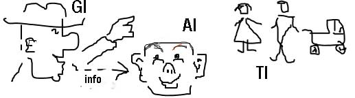

Gradual Grammar:

Часть вторая
9. Местоимение, MW
Дословный перевод термина pronoun означает «подручный имени (существительного)».
В таком наименовании есть свой резон, однако, данная часть речи сподручничает не только существительному и потому наречём-ка её Слово-Маска, MW,
- graL “MW”
- enL “Mask-Word”
Назначение слов-масок (как показывает само их имя) в том, чтобы покрывать/подменять другие слова, а то и группы слов.
По сути, они, MW– одна из приспособ сознания по облегчению своей работы: вместо того, чтоб мурыжиться с долгим наименованием какого-то понятия/отношения выдаётся краткая фишка/маска под которой подразумевается эта длиннота.
9.1. Назначение информационно-распределённых слов-масок, (ƒ)idMW
Коль скоро слова-маски служат, в основном, для покрытия/подмены наименований сущности, то, приступая к типологии слов-масок, не помешает посмотреть—какие-такие бывают типы сущностей?
Вопрос этот в таком виде, конечно, необъятен и потому спроецируем его на плоскость информации между двух "осей координат":
- типы сущностей исходя из их роли в процессе производства информации (внешняя соотнесённость), и
- типы сущностей исходя из их места в произведённой информации (внутренняя соотнесённость).
(1)
Для производства информации (i) помимо орудия производства (L) необходимы ещё три компонента:
-
источник, En_Gi
- graL “En_Gi”
- enL “information-giver entity”
-
адресат, En_Ai,
- graL “En_Ai”
- enL “information-addressee entity”
-
тема, En_Ti
- graL “En_Ti”
- enL “information-theme entity”

Примечание:
Приёмы производства информации меняются от языка к языку, но эти компоненты,
Ti—Gi—Ai,
абсолютная необходимость – убери хоть один и информация невозможна.
Инфо-адресат вовсе не обязан быть одного роду-племени с инфо-давом (давателем). Известны такие En_Ai как "уважаемый шкаф" или "Ветер, ветер, ты могуч!"
Что касается темы, En_Ti, то ею вполне может быть и En_Ai, а уж тем более (и намного чаще) также и En_Gi.
Одна и та же сущность может исполнять все три роли, но не в одно и то же время.
Первая разновидность слов-масок связана с процессом дачи информации внешним образом (MW external correlation).
Слова-маски данного вида показывают отношение помянутой сущности к излагаемой информации, т.е. какая информационная роль отведена ей, En, в производстве данной информации.
Назовём такие слова-маски информационно-распределёнными, idMW
- graL “idMW”
- enL “informationally determined mask-word”
Как уже отмечалось, по ходу дачи информации источник применяет слова-маски, чтоб не парится с оглашением полных имен компонентов.
Так, в английском языке инфо-дав, En_GI, покрывается маской 'I',
адресат, En_AI, – маской 'you',
а темы информации, En_TI (когда они не являются ни En_GI, ни En_AI,) подменяются масками
- 'he'^En_TI^♂,
- 'she'^En_TI^♀,
- 'it'^En_TI^ʘ,
Короче говоря:
idMW^En : {&:I,you,she,he,it}
9.2. Формы инфо-распределённых слов-масок, idMW_forms
Форма информационно-распределённых слов-масок зависит от роли отведённой сущности (которую покрывает/подменяет данное слово-маска) в отношении представленном в текущей информации.
То, что прочие грамматики рассматривают как отдельные виды/типы местоимений, GraGra полагает различными формами одного и того же вида слов-масок.
Однако, начнём с того, в чём GraGra согласуется с традиционными грамматиками.
9.2.1. Формы единственного и множественного числа инфо-распределённых слов-масок, idMW^En≥1
С учётом того, что слова-маски перечисленные в формуле
idMW^En : {&:I,you,she,he,it}
idMW^En=1 : {I,you,she,he,it}
Разумееется, сущностей может быть целая куча, но сознание, M, готово к такому обороту, располагая словами-масками и для множественных сущностей, a если источник информации имеет в виду себя совместно с кем/чем-то ещё, то такое множество покрывается маской «we»:
I + * = we (где * ≠ 0)
Примечание:
Выражение в скобках, "* ≠0", показывает, что добавка к "я" не должна быть равной нулю.
И действительно "я + ничто = я", а для получения "мы" нужно "я + нечто".
Продолжая такую арифметику для каждого из остальных единичных слов-масок, получаем слова-маски для множественных сущностей :
you + * = you (* ≠ 0)
he + * = they (* ≠ 0)
it + * = they (* ≠ 0)
she + * = they (* ≠ 0)
И теперь уже можно составить формулу-опись слов-масок для множественных сущностей:
idMW^En>1 : {we,you,they}
Примечание:
Отметим совпадение слова-маски для адресата информации, "you", как в единственном, так и во множественном числе.
9.2.2. Формы слов-масок исходя из роли сущностей в произведённой информации, idMW-->i(ƒ)En_types
- graL “-->”
- enL “dependent on”
Информация может быть какой угодно по стилю – от витиевато вычурной, до режущей правду-матку навпрямки, блин!
Однако, при всем множестве типов и стилей информации, вся она строится по фундаментально единой схеме:
i : [raEn + (rtEn)]^Re
(подробнее смотри здесь)
где raEN - сущность, от которой "исходит" данное отношение,
rtEn - сущность, на которую это отношение "направлено"
Данная схема показывает, что информация является представлением некого отношения и сущности/сущностей, что принадлежит/принадлежат к этому отношению.
Она представляет соотнесённость слов-масок со второй "осью координат" (MW internal correlation) на плоскости производства информации.
По ходу исполнения данной схемы слова-маски своей формой отражают роль подменённой ими сущности в описываемом отношении.
Исходя из этого все информационно-распределённые слова-маски распределяются на три вида
Все рассмотренные до сих пор слова-маски применяются для покрытия raEn (но и не только для этого!).
Уточним это в формулах-описях, добавлением ra перед En:
idMW^raEn=1 : {I,you,she,he,it} idMW^raEn_name>1 : {we,you,they} Что до сущностей, на которые «направлено» отношение, то такой их статус отражается и на форме слов-масок для их покрытия.
Так, самого себя в качестве «объекта» отношения источник информации покрывает маской 'me'.
Look at me! Сравним две формулы-описи:
idMW^raEn=1 : {I,you,she,he,it} idMW^rtEn=1 : {me,you,her,him,it} Из них видно совпадение форм у слов-масок для покрытия адресата информации, 'you', и темы информации среднего рода, 'it', как в качестве «зачинающих», так и в качестве «воспринимающих» отношение сущностей.
Примеры их применения:idMW^raEn=1 idMW^rtEn=1 I
you
she
he
itme
you
her
him
itI know you. You know me. She knows him. He knows her. I know it. Проведем такое же сравнение слов-масок для множественных сущностей:
idMW^raEn>1 : {we,you,they} idMW^rtEn>1 : {us,you,them} Примеры их применения:idMW^raEn>1 idMW^rtEn>1 we
you
theyus
you
themWe know you. You know us. We know them. И третий случай, когда сущность выступает в двух ипостасях сразу – и «зачинателя» и «воспринимателя» одного и того же отношения – обозначим её ratEn
- graL “ratEn”
- enL “relation assuming and target entity”
Формула-опись слов-масок для ratEn=1 следующая:
Сравнение с «зачинателями»idMW^ratEn=1 : {myself,yourself,herself,himself,itself} Примеры применения:idMW^raEn=1 idMW^ratEn=1 I
you
she
he
itmyself
yourself
herself
himself
itselfI know myself. You know yourself. She knows herself. He knows himself. It knows itself. Формула-опись слов-масок для ratEn>1 следующая:
idMW^ratEn>1 : {ourselves,yourselves,themselves} Примеры их применения:idMW^raEn>1 idMW^ratEn>1 we
you
theyourselves
yourselves
themselvesWe know ourselves. You know yourselves. They know themselves.
idMW(c) употребляются также как AT_intensifier, но это уже из раздела группирования слов, iC,
- graL “iC”
- enL “information chip”
| idMW^raEn | idMW^rtEn | idMW^ratEn | |
|---|---|---|---|
| En=1 |
I you she he it |
me you her him it |
myself yourself herself himself itself |
| En>1 |
we you they |
us you them |
ourselves yourselves themselves |
9.3. Информационно-непредугадуемые слова-маски, icMW
Информационно-непредугадуемые слова-маски, icMW
- graL “icMW”
- enL “informationally clueless mask-word”
своё название заслужили тем, что их форма никак не показывает ни внешней, ни внутренней соотнесённости данной маски с текущей информацией.
Иначе говоря, этот тип слов-масок пребывает вне "осей координат" на двухмерной плоскости производства информации.
В отличие от предыдущего типа слов-масок, у информационно-непредугадуемых легко прослеживаются их корни – способ их производства.
Именно на этом (на способе производства icMW) и основывается их распределение на подвиды.
Первый способ прост до умиления: из группы слов для наименования некой сущности выбрасывается существительное и—пожалуйста!—слово-маска готово.
У данного способа возможны два результата:
-
Oт группы слов полного наименования сущности остаётся 1 (одно) слово – имеем односоставное слово-маску, ic(1)MW
- graL “ic(1)MW”
- enL “one-word informationally clueless mask-word”
ic(1)MW : {&:both,one,some,this,what,long} -
Oт группы слов полного наименования сущности остаётся 2 (два) слова – имеем двусоставное слово-маску,
- graL “ic(2)MW”
- enL “two-word informationally clueless mask-word”
ic(2)MW : {&:the left, the old, the rich, the young, one another}
Например:
The young are very impatient.
ic(2)MW^En>1 : 'the'^AT_f + 'young'^AT_q
Why can't the English learn to speak?
ic(2)MW^En>1 : 'the'^AT_f + 'English'^AT_q
They know each other.
ic(2)MW^ra&rtEn≥1 : 'each'^AT_q + 'other'^AT_f
Примечание:
'each other' покрывает сущности являющиеся «источником» и, одновременно, «объектом» взаимонаправленного отношения между ними, ra&rtEn (не путать с ratEn!)
No one cares.
ic(2)MW^En=1 : 'no'^AT_qf(1) + 'one'^AT_qf(3a)
Oна – переходное звено между данным подвидом (слова-маски произведенным через сокращение компонентов) и следущим (слова-маски произведенные слиянием компонентов)
9.3.1. Слова-маски полученные через слияние, ic(+)MW
Второй способ производства информационнно непредугадуемых слов-масок состоит в слиянии двух слов для получения односоставного слова-маски, ic(+)MW
- graL “ic(+)MW”
- enL “merged informationally clueless mask-word”
| ic(+)MW : {&:anyone,none,nothing,somebody} |
-
прилагательные с существительными.
Do you know somebody who knows anything new? 'some'^AT + 'body'^N = 'somebody'^ic(+)MW 'any'^AT + 'thing'^N = 'anything'^ic(+)MW -
Либо только прилагательные.
Someone told someone and someone told you… 'some'^AT + 'one'^AT = 'someone'^ic(+)MW -
Или же прилагательное и наречие.
Nowhere is not too far away. 'no'^AT + 'where'^AB = 'nowhere'^ic(+)MW
9.3.2. Слова-маски полученные через сокращение существительного в группе слов
Семантически, односоставные слова-маски, ic(1)MW, подразделяются на виды согласующиеся с видом прилагательных (что остались от группы слов после сокращения в ней существительного), от которых они (слова-маски) были произведены:
9.3.2.1. Фокусирующие слова-маски, ic(1)MW_f
- graL “ic(1)MW_f”
- enL “one-word informational clueless mask-word focuser”
Например:
This is a cat.
'this'^AT_if(1a) → 'this'^ic(1)MW_f
Для обратного превращения (слова-маски в прилагательное) достаточно добавить после него (после слова-маски) существительное, N. Например:
This cat is fat.
'this'ic(1)MW_f → 'this'^AT_if(1a)
Give me the red one.
'a/an'^AT_if(4)→ 'one'^ic(1)MW_f
(Подробнее о распределении фокусирующих прилагательных смотри здесь.)
ic(1)MW_f=1:{one,this,that}
имеют также форму множественного числа
ic(1)MW_f>1:{ones,these,those}
Примечание 2:
фокусирующее слово-маска 'one'^ic(1)MW_f
(не путать с количественным словом-маской 'one'^ic(1)MW_q!)
в отличие от всех остальных слов-масок покрывает не совокупную группу слов для наименования сущности, а только лишь существительное, N, в составе такой группы.
9.3.2.2. Kоличественные слова-маски, ic(1)MW_q
- graL “ic(1)MW_q”
- enL “one-word clueless mask-word quantifier”
| We called all. | 'all'^AT_qf(1) → 'all'^ic(1)MW_q |
|---|---|
| Six came. | 'six'^AT_qf(3a) → 'six'^ic(1)MW_q |
Примечание:
Составные прилагательные из подвида AT_qf(3a), Например: 'forty five', рассматриваются как один компонент.
9.3.2.3. Распределительные слова-маски, ic(1)MW_d
- graL “ic(1)MW_d”
- enL “one-word informationally clueless distributive mask-word”
| She invited both. | 'both'^AT_de → 'both'^ic(1)MW_d |
|---|---|
| Neither was seen ever since. | 'neither'^AT_di → 'neither'^ic(1)MW_d |
(Подробнее о распределительных прилагательных смотри здесь.)
9.3.2.4. Вопросительные слова-маски, ic(1)MW_i
- graL “ic(1)MW_i”
- enL “one-word informationally clueless interrogative mask-word”
| You know what I mean. | 'what'^AT_i → 'what'^ic(1)MW_i |
|---|---|
| Who knows? |
Примечание:
Строго говоря, who не является производным словом-маской, поскольку среди вопросительных прилагательных нет ему подобного, как у what, which, whose.
(Подробнее о вопросительных прилагательных смотри здесь.)
9.3.2.5. Принадлежностные слова-маски, ic(1)MW_p
- graL “ic(1)MW_p”
- enL “one-word informationally clueless possessive mask-word”
У данного подвида слов-масок две разновидности:
-
Слова-маски производимые от N_based прилагательных.
Например:
My ribbon is blue, Mary's is white. 'Mary's'^AT_p → 'Mary's'^ic(1)MW_p Здесь принадлежностное слово-маска "Mary’s" произведено от N_base прилагательного (произведенного из существительного).
(Подробнее о N_base прилагательных смотри здесь.) -
Слова-маски производимые от MW_base прилагательных.
Такие слова-маски производятся из MW_base прилагательных, которые (до этого) производятся/выводятся из информационно-распределённых слов-масок, idMW:
Таблица 21. Трансформация местоимений в прилагательные с последующим получением из них местоимений другого вида
idMW преобразуются →
в →
следующие →
принадлежностные →
прилагательные →AT_p преобразуются →
в →
следующие →
принадлежностные →
слова-маски →ic(1)MW_p En=1 I
you
she
he
itmy
your
her
his
itsmine
yours
hers
his
itsEn>1 we
you
theyour
your
theirours
yours
theirs
Например:
Mary's ribbon is white, mine is yellow. 'my'^AT_p → 'mine'^ic(1)MW_p
9.3.2.6. Свойствоуказующие слова-маски, ic(1)MW_s- graL “ic(1)MW_s”
- enL “one-word informationally clueless specifying mask-word”
Эти слова-маски производятся из качественных прилагательных. Например:
You'll see us before long. 'long'^AT_q → 'long'^ic(1)MW_s Do you speak English? 'English'^AT_q → 'English'^ic(1)MW_s Lady in red is dancing... 'red'^AT_q → 'red'^ic(1)MW_s
9.4. ЗаключениеТаблица 22. Cводная таблица местоимений английского языка
1. информационно распределённые слова-маски, idMW En=1 En>1 a.
для «исходных» сущностей, idMW^raEnI
you
she
he
itwe
you
theyb.
для «воспринимающих» сущностей, idMW^rtEnme
you
her
him
itus
you
themc.
для «само-воспринимающих» сущностей, idMW^ratEnmyself
yourself
herself
himself
itselfourselves
yourselves
themselves2. информационно непредугадуемые слова-маски, icMW En=1 En>1 a.
производные слова-маски полученные путём сокращения до двух компонентов, ic(2)MWno one
the secondeach other
one another
the rich
the old
the otherb.
производные слова-маски полученные путём слияния компонентов, ic(+)MWanyone
somebody
somethingc.
производные слова-маски полученные путём сокращения до одного компонента, ic(1)MW(1)
распределительные, ic(1)MW_danother
each
neitherboth
other(2)
фокусирующие, ic(1)MW_fone
this
thatones
some
these
those(3)
вопросительные, ic(1)MW_iwhat
which
who
whose(4)
принадлежностные, ic(1)MW_pmine
yours
hers
his
itsours
yours
theirs(5)
количественные, ic(1)MW_qnone all
some
two
three
etc.(6)
свойствоуказующие, ic(1)MW_sEnglish
Japanese
etc.
blue
red
white
etc.